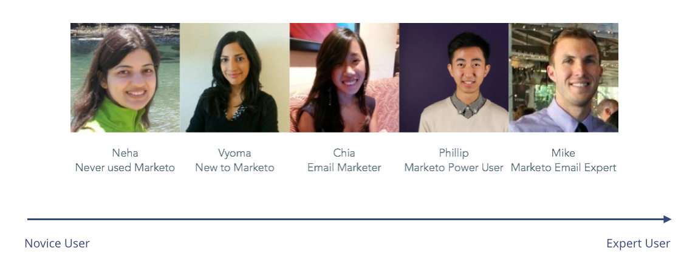
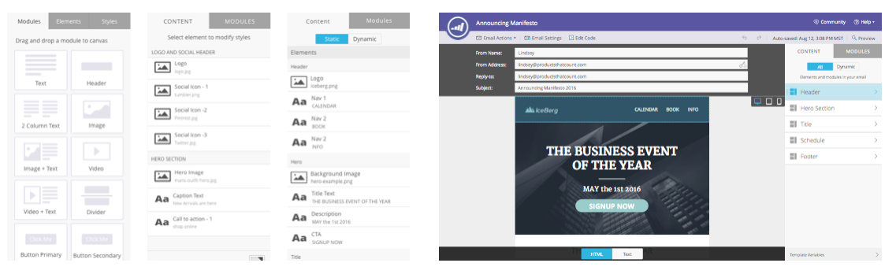
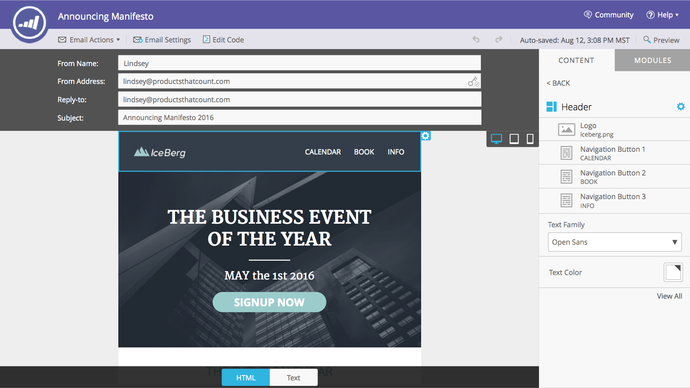

Background
Craft emails for email campaigns is one of the most common use case of Marketo. Designed and developed many years ago, the existing email editor is outdated and rather clumsy to use. The team at Marketo set out to re-imagine the existing email editor to better serve the need of modern email marketers.
Because of the importance of the email editing use case, this project is highly visible among the company and product leadership at Marketo. We also had an aggressive deadline: to release it before the Marketo Summit. I had to work very closely with the PM and engineers to create iterative and incremental design changes.
Learnings from User research
We started the project by conducting qualitative user research on the existing email editor.
-
The existing Marketo email editing experience is failing the modern
email marketers:
- Marketers expect to have email templates offered out-of-box. The existing email editor require the marketers to build their own email templates that require special engineering. And no email can be sent until the templates are built and loaded into the Marketo ecosystem.
- The existing template picking experience is rather clumsy. The UI is nothing but a dropdown of abstract names. It requires a high memory load for marketers to memorize which template to use.
- The templates in Marketo cannot be modified. Once the email template is build, their is no easy way for the end user of the template to customize it. The marketers cannot add or remove an image, text, add section or change the layout of the email. The marketers need to learn how to code or has to wait for engineering team to change the template.
- The existing email editing experience isn’t designed for mobile at all. Marketers need to manually shrink the browser to test the mobile view of the email.
- There is no support for any global styles or design system component. If there is a need to change the button style, the marketer needs to change all the individual instances.
The template picker
Because this is a project with an aggressive deadline, I need to be able to deliver some design to the engineer team to work on. I decided to start with a template picker, because it’s a new and contained experience. I designed the template picker to be visual oriented, so that marketers can select a template based on the thumbnails. A additional popup is also available for marketers to read more about the template before committing.

The new email editor
Once I shipped the email template picker, I continue to re-imagine the email editing experience. I decided to introduce the a few new differentiators to make the Marketo email editor more competitive:
- We introduced flexible email layout. Each email template consists of many different modules. The user can then construct a email with one or more of these modules.
- To make email constructing experience simple, we introduced a drag and drop interaction pattern.
- We added support for preview for mobile devices.
- We also added support for a email design system, you only need to define the style once, all of the component using the style will update automatically.
User Feedback
I conducted a round of usability testing. To make sure the feedback is representative, I selected participants with different levels of expertise with Marketo.
-
Something that people loved:
- The new visual design looks modern and more friendly to users
- All the new features are considered “valuable” for these users
- Experienced Marketo users can recognized the consistent interaction patterns
But we've also found a big challenge:
In my research, almost all users mentioned they wish to see an overview of the structure of the email they are crafting. Compare to the email content, available modules are secondary.
Design iterations on the tools panel
To give marketers a better preview of the email structure, I iterated on the right-side tools panel many times to find the best solution.
I ended up with a 2-step solution. I initially show the overall structure on the modules level. So that the marketers can easily see and understand what’s inside an email. They can then decide if the overall structure of an email is good enough.
The user can then drill down into a module by clicking into a module or even a component on the email itself. Hover effects are introduced to help the users orient themselves.
Outcome
- The redesign is featured in Marketo User Summit 2016 as part of the product keynote
- Launched and released to all customers July 2016. You can read some of the happy tweets below: